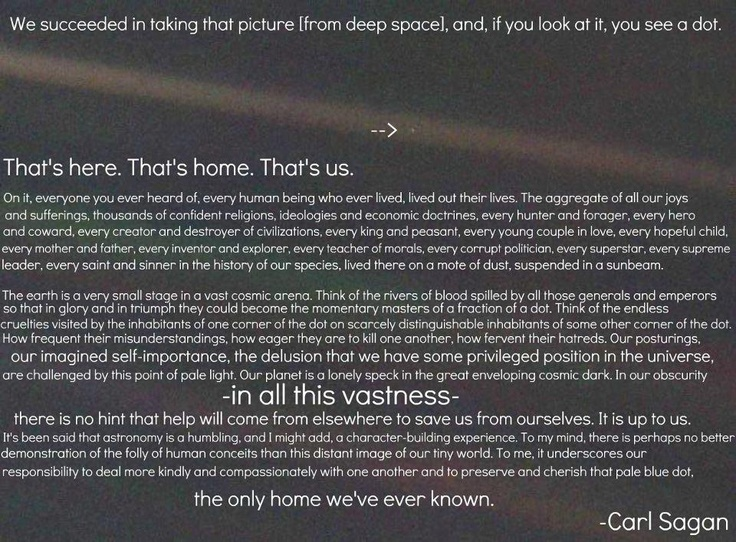

About
Homepage | Networld | Digital Communications | Digital Design | Visual Communications | Writing Skills
I am studying in the Interactive side of Assiniboine Community College’s (ACC) Interactive Media Arts program at in Brandon, Manitoba. I have always taken an interested in the arts ever since I could remember, and I'm glad to be able to continue my passion here at ACC.
Some of my interests/hobbies include playing video games, listening to music, playing basketball, hanging out with friends and family, watching movies, cooking, creating art with Adobe Photoshop CC 2014© and Adobe Illustrator CC 2014© and collecting posters.
I’ve always enjoyed new challenges and diving head first into new projects. I sometimes bite off more than I can chew but always finish projects on time without sacrificing the quality of my work. I’m always trying to create new ideas and think outside the box. My passion for my field, hunger to learn something new and competiveness has always driven me to give 110%.
Some of my favourite parts about the Interactive Media Arts program are how friendly the teachers are and how they really want to help us, and watch us succeed in our work.
What I hope to take from this course is to take the skills and experience that I have required and to be able to apply them in the work force. I'm achieving new life goals everyday as well as building on the ones that I have set for myself.
“I’ve struggled for a long time with survivin’, and no matter what, you keep finding something to fight for.”
-Joel/The Last of Us
